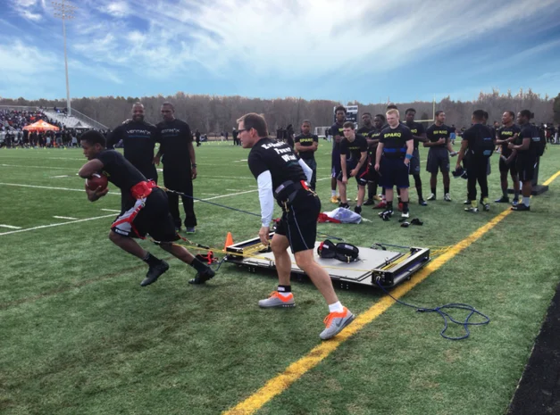

Certain sports and player positions involve frequent head impacts. In ice hockey, enforcers fight, and football players experience repeated collisions during games and practices.
Collisions in hockey and football increase risk for CTE.
Mike Webster, a former NFL player, was the first officially diagnosed with CTE. Thousands of hits during his career caused memory loss and behavior changes.
Young football players can receive impacts strong enough to injure adults, raising safety concerns in youth sports.

Practice drills are modified to reduce contact and protect athletes.